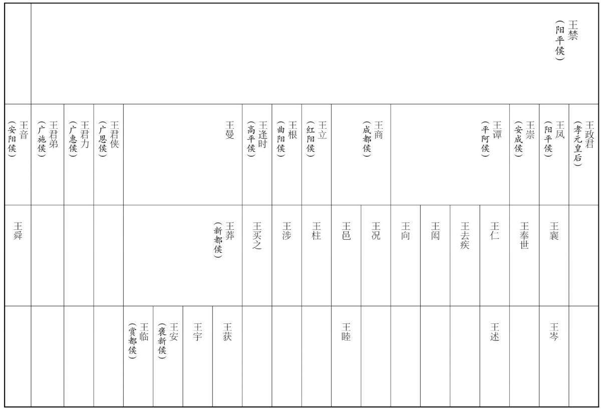

公元前27年资治通鉴：本年记事、原文与白话对照
按原书编年位置阅读；追叙和史论不等于本年发生的事件。白话采用所据译本，缺译不以生成译文补齐。
卷30 · 本年记事
公元前27年 · 前27年 · 本卷无单列记事
胡注本未在本卷单列这一年记事；不能据此认为当年没有历史事件。

本年形势与背景参考图
译本中未与胡注本可靠对应的内容
以下另列供核对版本差异，不并入胡注本正文。
译本所附古文
[1]春，伊邪莫演罢归，自言欲降，“即不受我，我自杀，终不敢还归。”使者以闻，下公卿议。议者或言：“宜如故事，受其降。”光禄大夫谷永、议郎杜钦以为：“汉兴，匈奴数为边害，故设金爵之赏以待降者。今单于屈体称臣，列为北藩，遣使朝贺，无有二心；汉家接之，宜异于往时。今既享单于聘贡之质，而更受其逋逃之臣，是贪一夫之得而失一国之心，拥有罪之臣而绝慕义之君也。假令单于初立，欲委身中国，未知利害，私使伊邪莫演诈降以卜吉凶，受之，亏德沮善，令单于自疏，不亲边吏；或者设为反间，欲因以生隙，受之，适合其策，使得归曲而责直；此诚边境安危之原，师旅动静之首，不可不详也。不如勿受，以诏日月之信，抑诈谖之谋，怀附亲之心，便！”对奏，天子从之。遣中郎将王舜往问降状，伊邪莫演曰：“我病狂，妄言耳。”遣去。归到，官位如故，不肯令见汉使。
译本白话
春季，伊邪莫演朝贡完毕，回国前，自称想归降汉朝，说：“如果汉朝不接受我归降，我就自杀，我至死不敢回匈奴。”使者据实奏报。成帝让公卿讨论。有人说：“应该按照旧例，接受他归降。”光禄大夫谷永、议郎杜钦则认为：“自汉王朝兴起以来，匈奴多次为害边疆，因此才设立黄金、爵位的赏赐，以优待归降者。如今单于低头称臣，匈奴成为中国北方的藩国，派遣使崐者朝贺进贡，没有二心。汉朝对待匈奴的政策，就应与过去不同。如今既然接受了单于朝贡的诚意，却又收纳他的反叛逃亡之臣，为了贪图得到一个人，而将失却一国之心；为了拥有一个有罪之臣，而与一位仰慕仁义的君王绝交。此外，还可作这样的假设；单于新即位，想依靠中国，但不知这样做的利害，暗中指使伊邪莫演诈降，以占卜吉凶。中国如果接受，便有亏道义，败坏美德，使单于同中国疏远，不与中国边疆的官员友好相处。或许是单于故意设下的反间计，想借此生仇，如果中国接纳他的归降，正好中了单于的计策，使匈奴可以把过错归到中国头上，从而理直气壮地责备我们。此事实在是边境安危的本源，是战争与和平的关键，不可以不慎重。我的意见，不如不接受，以显示我们光明磊落的信义，抑制欺诈的阴谋，安抚单于的归附亲善之心，这样才有利！”他们将此意见上奏，被采纳。派中郎将王舜去查问归降的情况，伊邪莫演说：“我有发狂的病，只是胡说罢了。”汉朝遣送他回国。回到匈奴后，他的官职仍和从前一样，但单于不再准许他会见汉朝的使者。
译本所附古文
杜钦向大将军王凤献策说：“蛮夷王侯轻视汉使，不惧怕朝廷的权威，我担心参议这个问题的人胆小怯懦，仍然坚持和解之策。等太守觉察情况有变，呈报上来，则又要耽搁三个月的时间。蛮夷王侯利用这段时间，可以集结部众，宣布并完善他们的计划。蛮夷各国党羽众多，各不相容，定会互相残杀。他们自知罪恶已经铸成，便疯狂地进攻郡守尉，并远远地藏身于暑热毒草地区，即令军事家孙武、吴起为将，古代勇士孟贲、夏育为兵，也会如入火坑深潭，被烧焦淹没，智慧和勇敢都无处施展。而如果屯田戍守，费用将会大得无法计算。应当趁他们还未铸成大错，还没疑心朝廷会对他们进行讨伐，暗中命令邻近各郡守尉操练兵马。大司农预先征调军粮，储积在要害地点。遴选胜任的太守前往，在秋凉时节进兵，诛杀蛮夷王侯中特别横暴的人。倘若认为这是不毛之地，无用之民，那么圣王就不必因此而劳动中国，应撤销郡县，放弃当地的人民，与蛮夷王侯断交，不再来往。如果认为是先帝所建立的累世功业，不可毁坏，也应该趁变乱处在萌芽之时，及早扑灭。等到变乱已经形成，然后再劳师作战，则万民要蒙受战祸。”于是王凤推荐金城司马、临邛人陈立为柯太守。
译本白话
立至柯谕告夜郎王兴，兴不从命；立请诛之，未报。乃从吏数十人出行县，至兴国且同亭，召兴。兴将数千人往至亭，从邑君数十人入见立。立数责，因断头。邑君曰：“将军诛无状，为民除害，愿出晓士众！”以兴头示之，皆释兵降。钩町王禹、漏卧侯俞震恐，入粟千斛、牛羊劳吏士。立还归郡。
陈立到达柯郡，下令给夜郎王兴，兴不从命。陈立请求朝廷准许他诛杀兴，没有得到答复。于是他率领随从官吏数十人出巡属县，到达了夜郎王兴控制地区的且同亭，召兴面见。兴率数千部众来到且同亭，由数十位部落王陪同，进见陈立。陈立对他进行谴责，并乘机将他砍头。部落王们说：“将军诛杀这种悖逆无行的人，是为民除害，我们愿出去告知部众！”他们把兴的人头拿给部众看，部众全都放下武器投降。钩町王禹、漏卧侯俞十分震惊恐惧，于是献上粟米千斛及牛羊来慰劳官吏将士。陈立返回郡城。
兴妻父翁指，与子邪务收余兵，迫胁旁二十二邑反。至冬，立奏募诸夷，与都尉、长史分将攻翁指等。翁指据厄为垒，立使奇兵绝其饷道，纵反间以诱其众。都尉万年曰：“兵久不决，费不可共。”引兵独进；败走，趋立营。立怒，叱戏下令格之。都尉复还战，立救之。时天大旱，立攻绝其水道。蛮夷共斩翁指，持首出降，西夷遂平。
兴的岳父翁指，和他的儿子邪务，收集残兵，胁迫周围二十二村落谋反。到了冬季，陈立奏报朝廷，征募各部落夷人当兵，由他与都尉、长史分别率领，进攻翁指等。翁指据险为堡垒。陈立用奇兵切断了他的粮道，又施反间计引诱翁指的部众。都尉万年说：“大军迟迟不决战，军费粮草将无法供给。”于是独自率兵进攻翁指，败退而逃，奔向陈立的大营。陈立大怒，喝令部下将他打出。万年回军再战，陈立率军救援。当时天正大旱，陈立攻占水源，断敌水道。蛮夷部众一同斩杀翁指，手持人头出来投降。于是西夷平定。